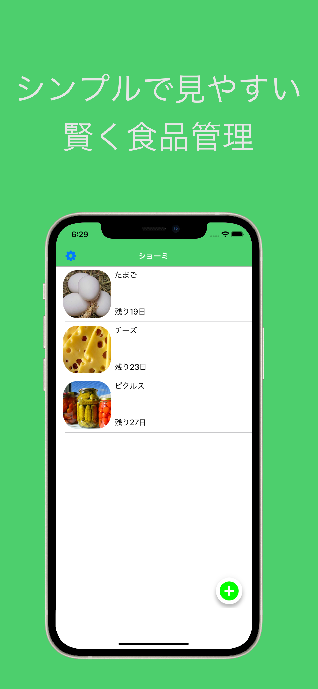
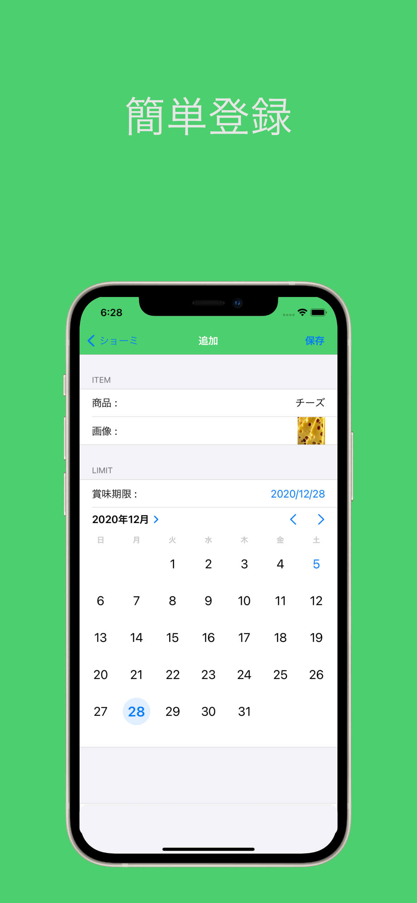
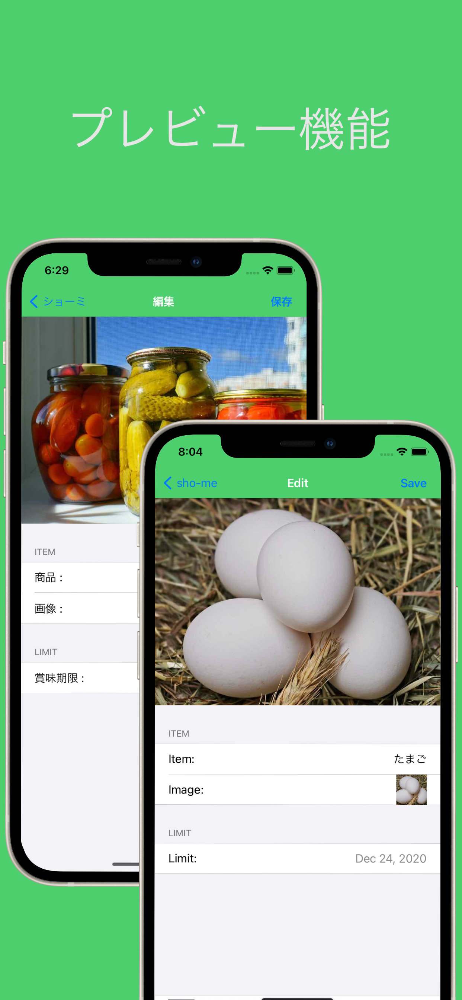
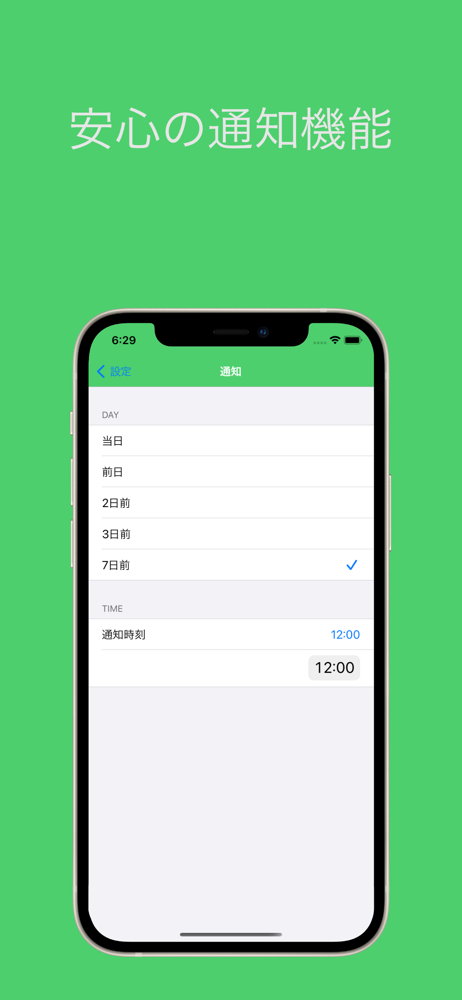

📱 アプリ概要
賞味期限を管理するアプリです。 賞味期限が近づくと通知が届き、食材を無駄にしないようにリマインド機能でサポートします。 一覧で食品を管理することで、計画的に食材を使い切ることができます。 一人暮らしの方や、食材の管理が苦手な方におすすめです。
🎥 スクリーンショット




✨ 主な機能
- 賞味期限の一覧表示
- 賞味期限の通知機能
📦 使用技術
- Swift
開発期間
2020年4月 - 2021年12月
📝 作者コメント
「あ、これも賞味期限切れてる。。。」という悩みを解決したくて開発しました。 一人暮らしで感じる親からの愛情、仕送り、いつの間にか賞味期限切れになっている食材。 無駄になる前に、賞味期限を意識して使い切るためのアプリです。